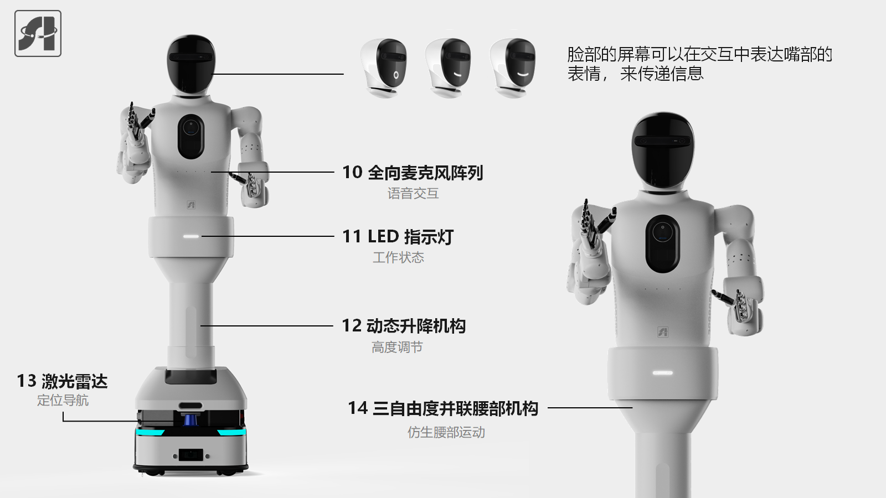
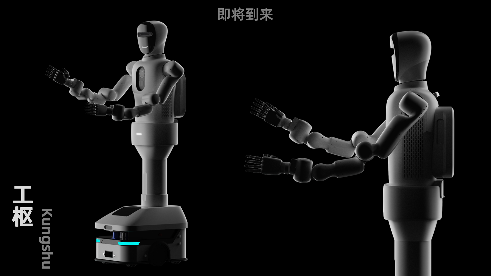

Overview
Kungshu is a dual-arm humanoid mobile robot currently under development for interactive service and task-assistance scenarios. The system combines coordinated dual-arm manipulation with a mobile base, and integrates multimodal interaction hardware, including an expressive face display, a 10-channel microphone array for voice interaction, and status LED indicators. To improve operational flexibility in real environments, Kungshu also features a dynamic lifting mechanism, a 3-DoF parallel waist module for biomimetic torso motion, and lidar-based positioning and navigation.


Development status
The project materials describe a system under development. Concept images show the intended hardware arrangement.